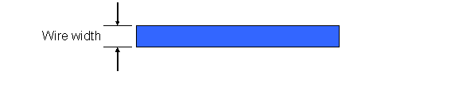

|
 |
 |
||||||
|
|
|
||||||
The average AC current density specifies how much average AC current a given width of a shape on the specified layer can handle at a certain frequency.
The average AC current density attribute has one of the following values, each of which return a float that represents the average AC current density in mA/µm, where the distance refers to the width of the wire.
If an oaFltValue is specified, the value represents the average AC current a wire can handle.
If an oaFlt1DTblValue is specified, the lookup key ("frequency") in the table represents the frequency in Mhz, and the value represents the average AC current the wire can handle.
If an oaFltIntFltTblValue is specified, the row lookup key ("frequency") represents the frequency in Mhz, the column lookup key ("width") represents the width of the shape, and the value represents the average AC current that the wire can handle.

Wires require enough current-carrying capability to avoid failures. Set the current density to the appropriate width to minimize failures due to current.
Return to oaLayer documentation
Copyright © 2001-2010 Cadence Design Systems, Inc.
All rights reserved.